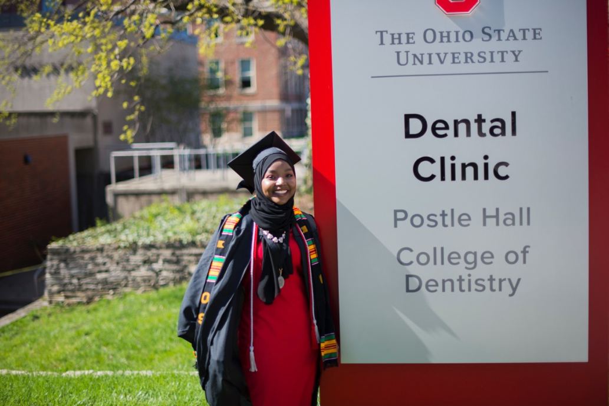

Bio: My name is Fatuma Pemba and I was Born in Kenya. I came to the United States in 2004 knowing absolutely no English. This was not too much of an issue as I love learning new languages. I speak a dialect of Somali called Maay-Maay and English fluently. I am currently learning Korean,I love watching Korean dramas and hope to visit South Korea soon. Although I am able to read in Arabic, I am learning to speak and understand the language. My career started in the dental field while I was in high school. I was a dental assistant while I attended Ohio State University for my Bachelors in dental hygiene. I realized after a year I did not want to be a hygienist for a long time because it did not let me be creative. I wanted to be able to create different things using the technology that I loved.My little brother was taking computer science courses and I was so interested in what he was learning. Now, in a different form, I would like to learn the language of computers. Attending WeCanCodeIT, I feel that I am finally able to accomplish this career goal and hobby of mine.
